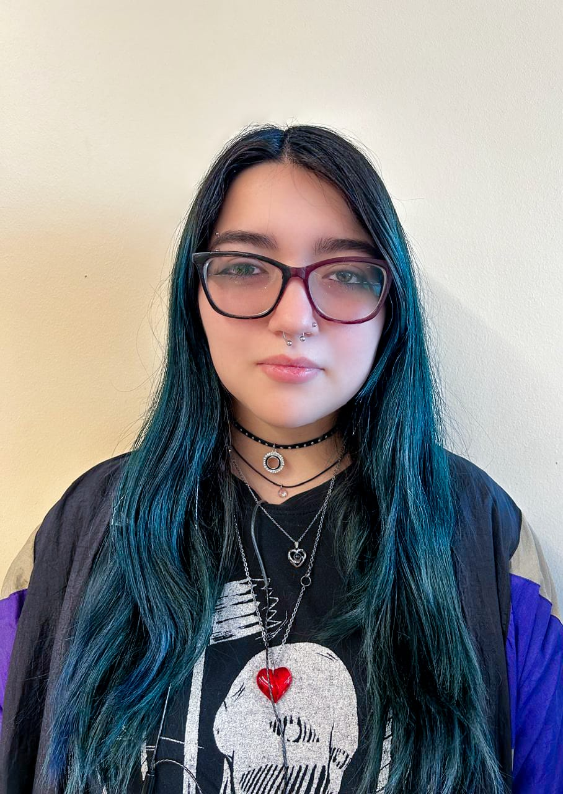
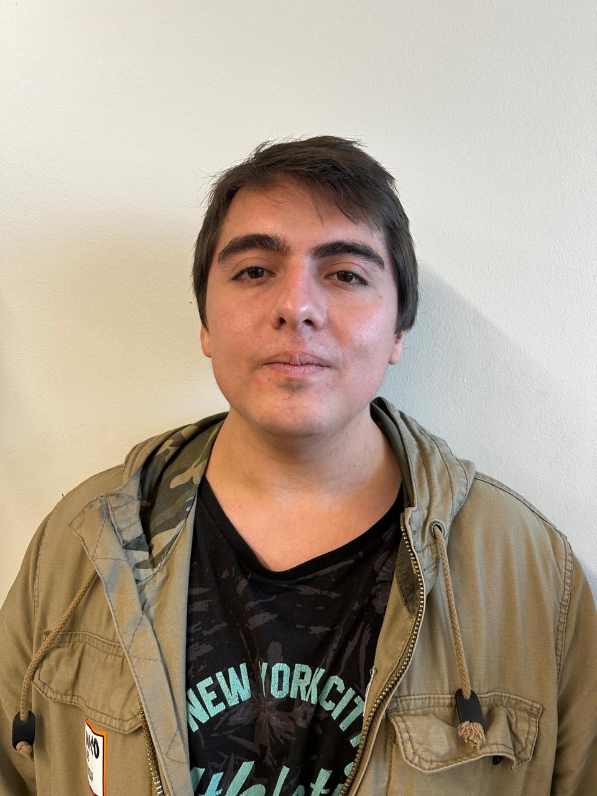

<section
  class="bg-fablab-bg text-fablab-text-secondary py-12 px-4 sm:px-6 lg:px-8"
>
  <div class="max-w-7xl mx-auto">
    <div class="text-center mb-12">
      <h1 class="text-5xl font-extrabold text-fablab-text-primary">
        Sobre Nosotros
      </h1>
      <p class="mt-4 text-xl text-fablab-text-secondary max-w-3xl mx-auto">
        Conoce la esencia de FabLab Inacap Maipú: Un espacio de innovación,
        aprendizaje y transformación.
      </p>
    </div>

    <div class="grid md:grid-cols-2 gap-12 items-center mb-16">
      <div>
        <h2 class="text-4xl font-bold text-fablab-text-primary mb-6">
          Nuestra Historia y Filosofía
        </h2>
        <p class="text-fablab-text-secondary leading-relaxed text-lg mb-4">
          FabLab Inacap Maipú nació de la visión de un grupo de estudiantes
          apasionados por la creación y la tecnología. Desde nuestro inicio,
          hemos crecido para convertirnos en un epicentro de innovación, donde
          las ideas se materializan y los talentos se desarrollan. Creemos
          firmemente en el poder de la educación práctica y el aprendizaje
          colaborativo.
        </p>
        <p class="text-fablab-text-secondary leading-relaxed text-lg">
          Somos un laboratorio impulsado por y para estudiantes, que busca
          empoderar a la comunidad inacapina con las herramientas y el
          conocimiento necesario para enfrentar los desafíos del futuro y
          construir soluciones creativas.
        </p>
      </div>
      <div class="relative flex justify-center items-center h-full">
        
      </div>
    </div>

    <div class="text-center mb-12">
      <h2 class="text-4xl font-bold text-fablab-text-primary mb-4">
        Historias de Transformación
      </h2>
      <p class="text-xl text-fablab-text-secondary max-w-3xl mx-auto">
        Conoce cómo el FabLab ha sido un catalizador para el crecimiento
        personal y profesional de nuestros estudiantes.
      </p>
    </div>

    <div class="grid md:grid-cols-2 gap-10">
      <div
        class="bg-fablab-card-bg p-8 rounded-2xl shadow-lg border border-fablab-border flex flex-col items-center text-center"
      >
        
        <h3 class="text-3xl font-bold text-fablab-primary mb-3">
          Maria Jose Gutierrez
        </h3>
        <p class="text-fablab-text-secondary italic mb-4">
          "Antes de llegar al FabLab, era una chica tímida y me costaba mucho
          expresarme y tomar la iniciativa en proyectos. Aquí encontré un
          espacio seguro para experimentar. Me dieron la confianza, las
          herramientas y el apoyo para liderar. Aprendí que tenía una voz y que
          podía inspirar a otros. Hoy, no solo participo, ¡sino que lidero
          equipos con pasión y determinación! El FabLab me enseñó a ser la líder
          que nunca supo que podía ser."
        </p>
        <span class="text-sm text-fablab-text-secondary"
          >- Actual Líder del Laboratorio
        </span>
      </div>

      <div
        class="bg-fablab-card-bg p-8 rounded-2xl shadow-lg border border-fablab-border flex flex-col items-center text-center"
      >
        
        <h3 class="text-3xl font-bold text-fablab-primary mb-3">
          Nicolás Escobar
        </h3>
        <p class="text-fablab-text-secondary italic mb-4">
          "Llegué al FabLab con una idea ambiciosa: la Poliformer, un proyecto
          que combinaba varias tecnologías. Aquí, no solo tuve acceso a
          impresoras 3D, cortadoras láser y electrónica avanzada, sino que
          también recibí la mentoría de profesores y compañeros que creyeron en
          mi visión. Esa combinación fue clave. Gracias al FabLab, mi proyecto
          Poliformer no solo se hizo realidad, ¡sino que me permitió llegar a
          ser semifinalista en el Go Innova 2024! Es un lugar donde tus sueños
          técnicos toman forma."
        </p>
        <span class="text-sm text-fablab-text-secondary"
          >- Semifinalista Go Innova 2024</span
        >
      </div>
    </div>
  </div>
</section>
